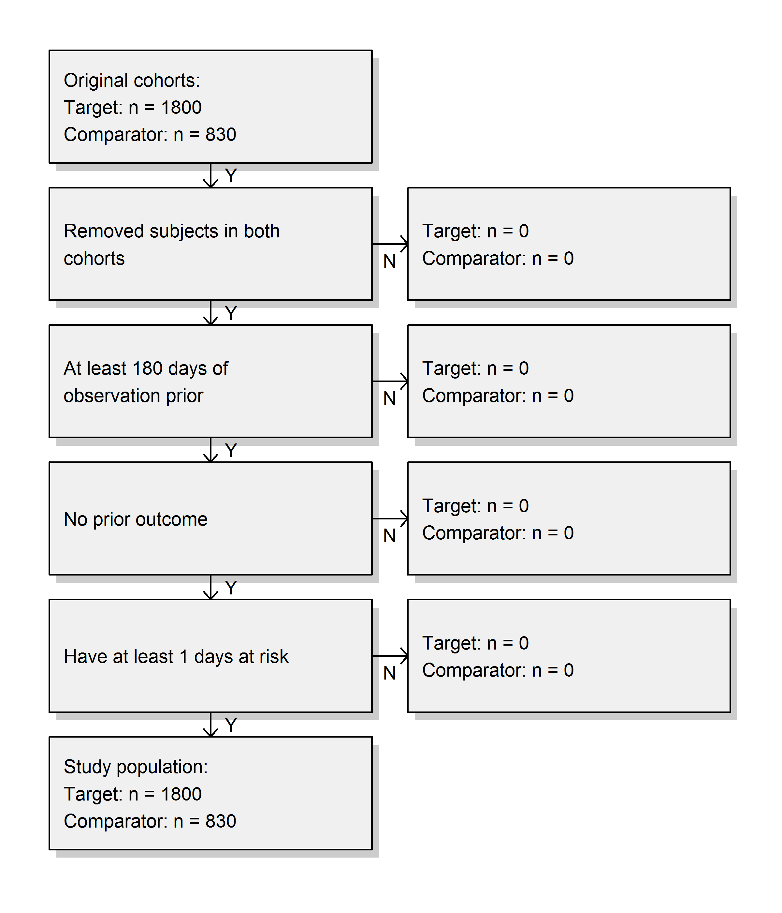
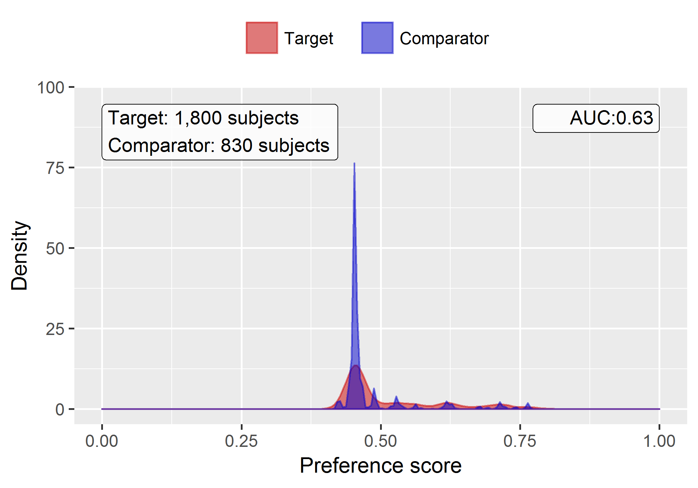
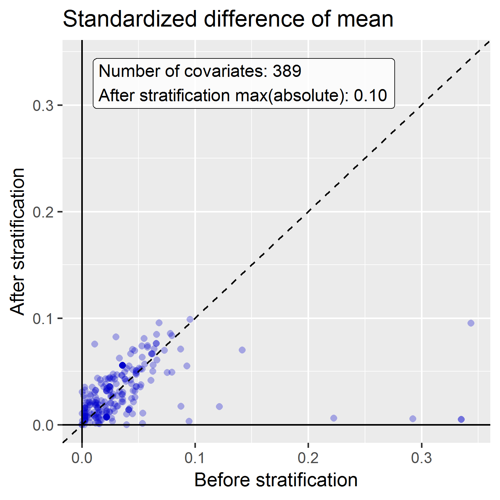

E Suggested Answers
This Appendix contains suggested answers for the exercises in the book.
E.1 The Common Data Model
Exercise 5.1
Based on the description in the exercise, John’s record should look like Table E.1.
| Column name | Value | Explanation |
|---|---|---|
| PERSON_ID | 2 | A unique integer. |
| GENDER_CONCEPT_ID | 8507 | The concept ID for male gender is 8507. |
| YEAR_OF_BIRTH | 1974 | |
| MONTH_OF_BIRTH | 8 | |
| DAY_OF_BIRTH | 4 | |
| BIRTH_DATETIME | 1974-08-04 00:00:00 | When the time is not known midnight is used. |
| DEATH_DATETIME | NULL | |
| RACE_CONCEPT_ID | 8516 | The concept ID for black or African American is 8516. |
| ETHNICITY_ CONCEPT_ID | 38003564 | 38003564 refers to “Not hispanic”. |
| LOCATION_ID | His address is not known. | |
| PROVIDER_ID | His primary care Provider is not known. | |
| CARE_SITE | His primary Care Site is not known. | |
| PERSON_SOURCE_ VALUE | NULL | Not provided. |
| GENDER_SOURCE_ VALUE | Man | The text used in the description. |
| GENDER_SOURCE_ CONCEPT_ID | 0 | |
| RACE_SOURCE_ VALUE | African American | The text used in the description. |
| RACE_SOURCE_ CONCEPT_ID | 0 | |
| ETHNICITY_SOURCE_ VALUE | NULL | |
| ETHNICITY_SOURCE_ CONCEPT_ID | 0 |
Exercise 5.2
Based on the description in the exercise, John’s record should look like Table E.2.
| Column name | Value | Explanation |
|---|---|---|
| OBSERVATION_ PERIOD_ID | 2 | A unique integer. |
| PERSON_ID | 2 | This is a foreign key to John’s record in the PERSON table. |
| OBSERVATION_PERIOD_ START_DATE | 2015-01-01 | The date of enrollment. |
| OBSERVATION_PERIOD_ END_DATE | 2019-07-01 | No data can be expected after the data extraction date. |
| PERIOD_TYPE_ CONCEPT_ID | 44814722 | 44814724 refers to “Period while enrolled in insurance”. |
Exercise 5.3
Based on the description in the exercise, John’s record should look like Table E.3.
| Column name | Value | Explanation |
|---|---|---|
| DRUG_EXPOSURE_ID | 1001 | Some unique integer |
| PERSON_ID | 2 | This is a foreign key to John’s record in the PERSON table. |
| DRUG_CONCEPT_ID | 19078461 | The provided NDC code maps to Standard Concept 19078461. |
| DRUG_EXPOSURE_ START_DATE | 2019-05-01 | The start date of the exposure to the drug. |
| DRUG_EXPOSURE_ START_DATETIME | 2019-05-01 00:00:00 | Midnight is used as the time is not known. |
| DRUG_EXPOSURE_ END_DATE | 2019-05-31 | Based on start date + days supply. |
| DRUG_EXPOSURE_ END_DATETIME | 2019-05-31 00:00:00 | Midnight is used as time is unknown. |
| VERBATIM_END_DATE | NULL | Not provided. |
| DRUG_TYPE_ CONCEPT_ID | 38000177 | 38000177 indicates “Prescription written”. |
| STOP_REASON | NULL | |
| REFILLS | NULL | |
| QUANTITY | NULL | Not provided. |
| DAYS_SUPPLY | 30 | As described in the exercise. |
| SIG | NULL | Not provided. |
| ROUTE_CONCEPT_ID | 4132161 | 4132161 indicates “Oral”. |
| LOT_NUMBER | NULL | Not provided. |
| PROVIDER_ID | NULL | Not provided. |
| VISIT_OCCURRENCE_ ID | NULL | No information on the visit was provided.. |
| VISIT_DETAIL_ID | NULL | |
| DRUG_SOURCE_ VALUE | 76168009520 | This is provided NDC code. |
| DRUG_SOURCE_ CONCEPT_ID | 583945 | 583945 represents the drug source value (NDC code “76168009520”). |
| ROUTE_SOURCE_ VALUE | NULL |
Exercise 5.4
To find the set of records, we can query the CONDITION_OCCURRENCE table:
library(DatabaseConnector)
connection <- connect(connectionDetails)
sql <- "SELECT *
FROM @cdm.condition_occurrence
WHERE condition_concept_id = 192671;"
result <- renderTranslateQuerySql(connection, sql, cdm = "main")
head(result)## CONDITION_OCCURRENCE_ID PERSON_ID CONDITION_CONCEPT_ID ...
## 1 4657 273 192671 ...
## 2 1021 61 192671 ...
## 3 5978 351 192671 ...
## 4 9798 579 192671 ...
## 5 9301 549 192671 ...
## 6 1997 116 192671 ...Exercise 5.5
To find the set of records, we can query the CONDITION_OCCURRENCE table using the CONDITION_SOURCE_VALUE field:
sql <- "SELECT *
FROM @cdm.condition_occurrence
WHERE condition_source_value = 'K92.2';"
result <- renderTranslateQuerySql(connection, sql, cdm = "main")
head(result)## CONDITION_OCCURRENCE_ID PERSON_ID CONDITION_CONCEPT_ID ...
## 1 4657 273 192671 ...
## 2 1021 61 192671 ...
## 3 5978 351 192671 ...
## 4 9798 579 192671 ...
## 5 9301 549 192671 ...
## 6 1997 116 192671 ...Exercise 5.6
This information is stored in the OBSERVATION_PERIOD table:
library(DatabaseConnector)
connection <- connect(connectionDetails)
sql <- "SELECT *
FROM @cdm.observation_period
WHERE person_id = 61;"
renderTranslateQuerySql(connection, sql, cdm = "main")## OBSERVATION_PERIOD_ID PERSON_ID OBSERVATION_PERIOD_START_DATE ...
## 1 61 61 1968-01-21 ...E.2 Standardized Vocabularies
Exercise 6.1
Concept ID 192671 (“Gastrointestinal hemorrhage”)
Exercise 6.2
ICD-10CM codes:
- K29.91 “Gastroduodenitis, unspecified, with bleeding”
- K92.2 “Gastrointestinal hemorrhage, unspecified”
ICD-9CM codes:
- 578 “Gastrointestinal hemorrhage”
- 578.9 “Hemorrhage of gastrointestinal tract, unspecified”
Exercise 6.3
MedDRA preferred terms:
- “Gastrointestinal haemorrhage” (Concept ID 35707864)
- “Intestinal haemorrhage” (Concept ID 35707858)
E.3 Extract Transform Load
Exercise 7.1
- Data experts and CDM experts together design the ETL
- People with medical knowledge create the code mappings
- A technical person implements the ETL
- All are involved in quality control
Exercise 7.2
| Column | Value | Answer |
|---|---|---|
| PERSON_ID | A123B456 | This column has a data type of integer so the source record value needs to be translated to a numeric value. |
| GENDER_CONCEPT_ID | 8532 | |
| YEAR_OF_BIRTH | NULL | If we do not know the month or day of birth, we do not guess. A person can exist without a month or day of birth. If a person lacks a birth year that person should be dropped. This person would have to be dropped due to now year of birth. |
| MONTH_OF_BIRTH | NULL | |
| DAY_OF_BIRTH | NULL | |
| RACE_CONCEPT_ID | 0 | The race is WHITE which should be mapped to 8527. |
| ETHNICITY_CONCEPT_ ID | 8527 | No ethnicity was provided, this should be mapped to 0. |
| PERSON_SOURCE_ VALUE | A123B456 | |
| GENDER_SOURCE_ VALUE | F | |
| RACE_SOURCE_VALUE | WHITE | |
| ETHNICITY_SOURCE_ VALUE | NONE PROVIDED |
Exercise 7.3
| Column | Value |
|---|---|
| VISIT_OCCURRENCE_ID | 1 |
| PERSON_ID | 11 |
| VISIT_START_DATE | 2004-09-26 |
| VISIT_END_DATE | 2004-09-30 |
| VISIT_CONCEPT_ID | 9201 |
| VISIT_SOURCE_VALUE | inpatient |
E.4 Data Analytics Use Cases
Exercise 8.1
Characterization
Patient-level prediction
Population-level estimation
Exercise 8.2
Probably not. Defining a non-exposure cohort that is comparable to your diclofenac exposure cohort is often impossible, since people take diclofenac for a reason. This precludes a between-person comparison. It might possible to a within-person comparison, so for each patient in the diclofenac cohort identifying time when they are not exposed, but a similar problem occurs here: these times are likely incomparable, because there are reasons when at one time someone is exposed and at other times not.
E.5 SQL and R
Exercise 10.1
To compute the number of people we can simply query the PERSON table:
library(DatabaseConnector)
connection <- connect(connectionDetails)
sql <- "SELECT COUNT(*) AS person_count
FROM @cdm.person;"
renderTranslateQuerySql(connection, sql, cdm = "main")## PERSON_COUNT
## 1 2694Exercise 10.2
To compute the number of people with at least one prescription of celecoxib, we can query the DRUG_EXPOSURE table. To find all drugs containing the ingredient celecoxib, we join to the CONCEPT_ANCESTOR and CONCEPT tables:
library(DatabaseConnector)
connection <- connect(connectionDetails)
sql <- "SELECT COUNT(DISTINCT(person_id)) AS person_count
FROM @cdm.drug_exposure
INNER JOIN @cdm.concept_ancestor
ON drug_concept_id = descendant_concept_id
INNER JOIN @cdm.concept ingredient
ON ancestor_concept_id = ingredient.concept_id
WHERE LOWER(ingredient.concept_name) = 'celecoxib'
AND ingredient.concept_class_id = 'Ingredient'
AND ingredient.standard_concept = 'S';"
renderTranslateQuerySql(connection, sql, cdm = "main")## PERSON_COUNT
## 1 1844Note that we use COUNT(DISTINCT(person_id)) to find the number of distinct persons, considering that a person might have more than one prescription. Also note that we use the LOWER function to make our search for “celecoxib” case-insensitive.
Alternatively, we can use the DRUG_ERA table, which is already rolled up to the ingredient level:
library(DatabaseConnector)
connection <- connect(connectionDetails)
sql <- "SELECT COUNT(DISTINCT(person_id)) AS person_count
FROM @cdm.drug_era
INNER JOIN @cdm.concept ingredient
ON drug_concept_id = ingredient.concept_id
WHERE LOWER(ingredient.concept_name) = 'celecoxib'
AND ingredient.concept_class_id = 'Ingredient'
AND ingredient.standard_concept = 'S';"
renderTranslateQuerySql(connection, sql, cdm = "main")## PERSON_COUNT
## 1 1844Exercise 10.3
To compute the number of diagnoses during exposure we extend our previous query by joining to the CONDITION_OCCURRENCE table. We join to the CONCEPT_ANCESTOR table to find all condition concepts that imply a gastrointestinal haemorrhage:
library(DatabaseConnector)
connection <- connect(connectionDetails)
sql <- "SELECT COUNT(*) AS diagnose_count
FROM @cdm.drug_era
INNER JOIN @cdm.concept ingredient
ON drug_concept_id = ingredient.concept_id
INNER JOIN @cdm.condition_occurrence
ON condition_start_date >= drug_era_start_date
AND condition_start_date <= drug_era_end_date
INNER JOIN @cdm.concept_ancestor
ON condition_concept_id =descendant_concept_id
WHERE LOWER(ingredient.concept_name) = 'celecoxib'
AND ingredient.concept_class_id = 'Ingredient'
AND ingredient.standard_concept = 'S'
AND ancestor_concept_id = 192671;"
renderTranslateQuerySql(connection, sql, cdm = "main")## DIAGNOSE_COUNT
## 1 41Note that in this case it is essential to use the DRUG_ERA table instead of the DRUG_EXPOSURE table, because drug exposures with the same ingredient can overlap, but drug eras can. This could lead to double counting. For example, imagine a person received two drug drugs containing celecoxib at the same time. This would be recorded as two drug exposures, so any diagnoses occurring during the exposure would be counted twice. The two exposures will be merged into a single non-overlapping drug era.
E.6 Defining Cohorts
Exercise 11.1
We create initial event criteria encoding these requirements:
- New users of diclofenac
- Ages 16 or older
- With at least 365 days of continuous observation prior to exposure
When done, the cohort entry event section should look like Figure E.1.

Figure E.1: Cohort entry event settings for new users of diclofenac
The concept set expression for diclofenac should look like Figure E.2, including the ingredient ‘Diclofenac’ and all of its descendant, thus including all drugs containing the ingredient diclofenac.

Figure E.2: Concept set expression for diclofenac.
Next, we require no prior exposure to any NSAID, as shown in Figure E.3.

Figure E.3: Requiring no prior exposure to any NSAID.
The concept set expression for NSAIDs should look like Figure E.4, including the NSAIDs class and all of its descendant, thus including all drugs containing any NSAID.

Figure E.4: Concept set expression for NSAIDs
Additionally, we require no prior diagnosis of cancer, as shown in Figure E.5.

Figure E.5: Requiring no prior cancer diagnosis.
The concept set expression for “Broad malignancies” should look like Figure E.6, including the high level concept “Malignant neoplastic disease” and all of its descendant.

Figure E.6: Concept set expression for broad malignancies
Finally, we define the cohort exit criteria as discontinuation of exposure (allowing for a 30-day gap), as shown in Figure E.7.

Figure E.7: Setting the cohort exit date.
Exercise 11.2
For readability we here split the SQL into two steps. We first find all condition occurrences of myocardial infarction, and store these in a temp table called “#diagnoses”:
library(DatabaseConnector)
connection <- connect(connectionDetails)
sql <- "SELECT person_id AS subject_id,
condition_start_date AS cohort_start_date
INTO #diagnoses
FROM @cdm.condition_occurrence
WHERE condition_concept_id IN (
SELECT descendant_concept_id
FROM @cdm.concept_ancestor
WHERE ancestor_concept_id = 4329847 -- Myocardial infarction
)
AND condition_concept_id NOT IN (
SELECT descendant_concept_id
FROM @cdm.concept_ancestor
WHERE ancestor_concept_id = 314666 -- Old myocardial infarction
);"
renderTranslateExecuteSql(connection, sql, cdm = "main")We then select only those that occur during an inpatient or ER visit, using some unique COHORT_DEFINITION_ID (we selected ‘1’):
sql <- "INSERT INTO @cdm.cohort (
subject_id,
cohort_start_date,
cohort_definition_id
)
SELECT subject_id,
cohort_start_date,
CAST (1 AS INT) AS cohort_definition_id
FROM #diagnoses
INNER JOIN @cdm.visit_occurrence
ON subject_id = person_id
AND cohort_start_date >= visit_start_date
AND cohort_start_date <= visit_end_date
WHERE visit_concept_id IN (9201, 9203, 262); -- Inpatient or ER;"
renderTranslateExecuteSql(connection, sql, cdm = "main")Note that an alternative approach would have been to join the conditions to the visits based on the VISIT_OCCURRENCE_ID, instead of requiring the condition date to fall within the visit start and end date. This would likely be more accurate, as it would guarantee that the condition was recorded in relation to the inpatient or ER visit. However, many observational databases do not record the link between visit and diagnose, and we therefore chose to use the dates instead, likely giving us a higher sensitivity but perhaps lower specificity.
Note also that we ignored the cohort end date. Often, when a cohort is used to define an outcome we are only interested in the cohort start date, and there is no point in creating an (ill-defined) cohort end date.
It is recommended to clean up any temp tables when no longer needed:
E.7 Characterization
Exercise 12.1
In ATLAS we click on  and select the data source we’re interested in. We could select the Drug Exposure report, select the “Table” tab, and search for “celecoxib” as shown in Figure E.8. Here we see that this particular database has exposures to various formulations of celecoxib. We could click on any of these drugs to get a more detailed view, for example showing age and gender distributions for these drugs.
and select the data source we’re interested in. We could select the Drug Exposure report, select the “Table” tab, and search for “celecoxib” as shown in Figure E.8. Here we see that this particular database has exposures to various formulations of celecoxib. We could click on any of these drugs to get a more detailed view, for example showing age and gender distributions for these drugs.
Figure E.8: Data source characterization.
Exercise 12.2
Click on  and then “New cohort” to create a new cohort. Give the cohort a meaningful name (e.g. “Celecoxib new users”) and go to the “Concept Sets” tab. Click on “New Concept Set”, and give your concept set a meaningful names (e.g. “Celecoxib”). Open the
and then “New cohort” to create a new cohort. Give the cohort a meaningful name (e.g. “Celecoxib new users”) and go to the “Concept Sets” tab. Click on “New Concept Set”, and give your concept set a meaningful names (e.g. “Celecoxib”). Open the  module, search for “celecoxib”, restrict the Class to “Ingredient” and Standard Concept to “Standard”, and click the
module, search for “celecoxib”, restrict the Class to “Ingredient” and Standard Concept to “Standard”, and click the  to add the concept to your concept set as show in Figure E.9.
to add the concept to your concept set as show in Figure E.9.
Figure E.9: Selecting the standard concept for the ingredient “celecoxib”.
Click on the left arrow shown at the top left of Figure E.9 to return to your cohort definition. Click on “+Add Initial Event” and then “Add Drug Era”. Select your previously created concept set for the drug era criterion. Click on “Add attribute…” and select “Add First Exposure Criteria.” Set the required continuous observation to at least 365 days before the index date. The result should look like Figure E.10. Leave the Inclusion Criteria, Cohort Exit, and Cohort Eras section as they are. Make sure to save the cohort definition by clicking  , and close it by clicking .
, and close it by clicking .
Figure E.10: A simple celecoxib new user cohort definition.
Now that we have our cohort defined, we can characterize it. Click on  and then “New Characterization”. Give you characterization a meaningful name (e.g. “Celecoxib new users characterization”). Under Cohort Definitions, click on “Import” and select your recently created cohort definition. Under “Feature Analyses”, click on “Import” and select at least one condition analysis and one drug analysis, for example “Drug Group Era Any Time Prior” and “Condition Group Era Any Time Prior”. Your characterization definition should now look like Figure E.11. Make sure to save the characterization settings by clicking .
and then “New Characterization”. Give you characterization a meaningful name (e.g. “Celecoxib new users characterization”). Under Cohort Definitions, click on “Import” and select your recently created cohort definition. Under “Feature Analyses”, click on “Import” and select at least one condition analysis and one drug analysis, for example “Drug Group Era Any Time Prior” and “Condition Group Era Any Time Prior”. Your characterization definition should now look like Figure E.11. Make sure to save the characterization settings by clicking .
Figure E.11: Characterization settings.
Click on the “Exections” tab, and click on “Generate” for one of the data sources. It may take a while for the generation to complete. When done, we can click on “View latest results”. The resulting screen will look something like Figure E.12, showing for example that pain and arthropathy are commonly observed, which should not surprise use as these are indications for celecoxib. Lower on the list we may see conditions we were not expecting.
Figure E.12: Characterization settings.
Exercise 12.3
Click on and then “New cohort” to create a new cohort. Give the cohort a meaningful name (e.g. “GI bleed”) and go to the “Concept Sets” tab. Click on “New Concept Set”, and give your concept set a meaningful names (e.g. “GI bleed”). Open the module, search for “Gastrointestinal hemorrhage”, and click the next to the top concept to add the concept to your concept set as show in Figure E.13.
Figure E.13: Selecting the standard concept for “Gastrointestinal hemorrhage”.
Click on the left arrow shown at the top left of Figure E.13 to return to your cohort definition. Open the “Concept Sets” tab again, and check “Descendants” next to the GI hemorrhage concept, as shown in Figure E.14.
Figure E.14: Adding all descendants to “Gastrointestinal hemorrhage”.
Return to the “Definition” tab, click on “+Add Initial Event” and then “Add Condition Occurrence”. Select your previously created concept set for the condition occurrence criterion. The result should look like Figure E.15. Leave the Inclusion Criteria, Cohort Exit, and Cohort Eras section as they are. Make sure to save the cohort definition by clicking , and close it by clicking .

Figure E.15: A simple gastrointestinal bleed cohort definition.
Now that we have our cohort defined, we can compute the incidence rate. Click on  and then “New Analysis”. Give your analysis a meaningful name (e.g. “Incidence of GI bleed after celecoxib initiation”). Click “Add Target Cohort” and select our celecoxib new user cohort. Click on “Add Outcome Cohort” and add our new GI bleed cohort. Set the Time At Risk to end 1095 days after the start date. The analysis should now look like Figure E.16. Make sure to save the analysis settings by clicking .
and then “New Analysis”. Give your analysis a meaningful name (e.g. “Incidence of GI bleed after celecoxib initiation”). Click “Add Target Cohort” and select our celecoxib new user cohort. Click on “Add Outcome Cohort” and add our new GI bleed cohort. Set the Time At Risk to end 1095 days after the start date. The analysis should now look like Figure E.16. Make sure to save the analysis settings by clicking .
Figure E.16: A incidence rate analysis.
Click on the “Generation” tab, and click on “Generate”. Select one of the data sources and click “Generate”. When done, we can see the computed incidence rate and proportion, as shown in Figure E.17.
Figure E.17: Incidence results.
E.8 Population-Level Estimation
Exercise 13.1
We specify the default set of covariates, but we must exclude the two drugs we’re comparing, including all their descendants, because else our propensity model will become perfectly predictive:
library(CohortMethod)
nsaids <- c(1118084, 1124300) # celecoxib, diclofenac
covSettings <- createDefaultCovariateSettings(
excludedCovariateConceptIds = nsaids,
addDescendantsToExclude = TRUE)
# Load data:
cmData <- getDbCohortMethodData(
connectionDetails = connectionDetails,
cdmDatabaseSchema = "main",
targetId = 1,
comparatorId = 2,
outcomeIds = 3,
exposureDatabaseSchema = "main",
exposureTable = "cohort",
outcomeDatabaseSchema = "main",
outcomeTable = "cohort",
covariateSettings = covSettings)
summary(cmData)## CohortMethodData object summary
##
## Treatment concept ID: 1
## Comparator concept ID: 2
## Outcome concept ID(s): 3
##
## Treated persons: 1800
## Comparator persons: 830
##
## Outcome counts:
## Event count Person count
## 3 479 479
##
## Covariates:
## Number of covariates: 389
## Number of non-zero covariate values: 26923Exercise 13.2
We create the study population following the specifications, and output the attrition diagram:
studyPop <- createStudyPopulation(
cohortMethodData = cmData,
outcomeId = 3,
washoutPeriod = 180,
removeDuplicateSubjects = "remove all",
removeSubjectsWithPriorOutcome = TRUE,
riskWindowStart = 0,
startAnchor = "cohort start",
riskWindowEnd = 99999)
drawAttritionDiagram(studyPop)
We see that we did not lose any subjects compared to the original cohorts, probably because the restrictions used here were already applied in the cohort definitions.
Exercise 13.3
We fit a simple outcome model using a Cox regression:
## Model type: cox
## Stratified: FALSE
## Use covariates: FALSE
## Use inverse probability of treatment weighting: FALSE
## Status: OK
##
## Estimate lower .95 upper .95 logRr seLogRr
## treatment 1.34612 1.10065 1.65741 0.29723 0.1044It is likely that celecoxib users are not exchangeable with diclofenac users, and that these baseline differences already lead to different risks of the outcome. If we do not adjust for these difference, like in this analysis, we are likely producing biased estimates.
Exercise 13.4
We fit a propensity model on our study population, using all covariates we extracted. We then show the preference score distribution:
ps <- createPs(cohortMethodData = cmData,
population = studyPop)
plotPs(ps, showCountsLabel = TRUE, showAucLabel = TRUE)
Note that this distribution looks a bit odd, with several spikes. This is because we are using a very small simulated dataset. Real preference score distributions tend to be much smoother.
The propensity model achieves an AUC of 0.63, suggested there are differences between target and comparator cohort. We see quite a lot overlap between the two groups suggesting PS adjustment can make them more comparable.
Exercise 13.5
We stratify the population based on the propensity scores, and compute the covariate balance before and after stratification:
strataPop <- stratifyByPs(ps, numberOfStrata = 5)
bal <- computeCovariateBalance(strataPop, cmData)
plotCovariateBalanceScatterPlot(bal,
showCovariateCountLabel = TRUE,
showMaxLabel = TRUE,
beforeLabel = "Before stratification",
afterLabel = "After stratification")
We see that various baseline covariates showed a large (>0.3) standardized difference of means before stratification (x-axis). After stratification, balance is increased, with the maximum standardized difference <= 0.1.
Exercise 13.6
We fit a outcome model using a Cox regression, but stratify it by the PS strata:
## Model type: cox
## Stratified: TRUE
## Use covariates: FALSE
## Use inverse probability of treatment weighting: FALSE
## Status: OK
##
## Estimate lower .95 upper .95 logRr seLogRr
## treatment 1.13211 0.92132 1.40008 0.12409 0.1068We see the adjusted estimate is lower than the unadjusted estimate, and that the 95% confidence interval now includes 1. This is because we are now adjusting for baseline differences between the two exposure groups, thus reducing bias.
E.9 Patient-Level Prediction
Exercise 14.1
We specify a set of covariate settings, and use the getPlpData function to extract the data from the database:
library(PatientLevelPrediction)
covSettings <- createCovariateSettings(
useDemographicsGender = TRUE,
useDemographicsAge = TRUE,
useConditionGroupEraLongTerm = TRUE,
useConditionGroupEraAnyTimePrior = TRUE,
useDrugGroupEraLongTerm = TRUE,
useDrugGroupEraAnyTimePrior = TRUE,
useVisitConceptCountLongTerm = TRUE,
longTermStartDays = -365,
endDays = -1)
plpData <- getPlpData(connectionDetails = connectionDetails,
cdmDatabaseSchema = "main",
cohortDatabaseSchema = "main",
cohortTable = "cohort",
cohortId = 4,
covariateSettings = covSettings,
outcomeDatabaseSchema = "main",
outcomeTable = "cohort",
outcomeIds = 3)
summary(plpData)## plpData object summary
##
## At risk cohort concept ID: -1
## Outcome concept ID(s): 3
##
## People: 2630
##
## Outcome counts:
## Event count Person count
## 3 479 479
##
## Covariates:
## Number of covariates: 245
## Number of non-zero covariate values: 54079Exercise 14.2
We create a study population for the outcome of interest (in this case the only outcome for which we extracted data), removing subjects who experienced the outcome before they started the NSAID, and requiring 364 days of time-at-risk:
population <- createStudyPopulation(plpData = plpData,
outcomeId = 3,
washoutPeriod = 364,
firstExposureOnly = FALSE,
removeSubjectsWithPriorOutcome = TRUE,
priorOutcomeLookback = 9999,
riskWindowStart = 1,
riskWindowEnd = 365,
addExposureDaysToStart = FALSE,
addExposureDaysToEnd = FALSE,
minTimeAtRisk = 364,
requireTimeAtRisk = TRUE,
includeAllOutcomes = TRUE)
nrow(population)## [1] 2578In this case we have lost a few people by removing those that had the outcome prior, and by requiring a time-at-risk of at least 364 days.
Exercise 14.3
We run a LASSO model by first creating a model settings object, and then calling the runPlp function. In this case we do a person split, training the model on 75% of the data and evaluating on 25% of the data:
lassoModel <- setLassoLogisticRegression(seed = 0)
lassoResults <- runPlp(population = population,
plpData = plpData,
modelSettings = lassoModel,
testSplit = 'person',
testFraction = 0.25,
nfold = 2,
splitSeed = 0)Note that for this example set the random seeds both for the LASSO cross-validation and for the train-test split to make sure the results will be the same on multiple runs.
We can now view the results using the Shiny app:
This will launch the app as shown in Figure E.18. Here we see an AUC on the test set of 0.645, which is better than random guessing, but maybe not good enough for clinical pratice.
Figure E.18: Patient-level prediction Shiny app.